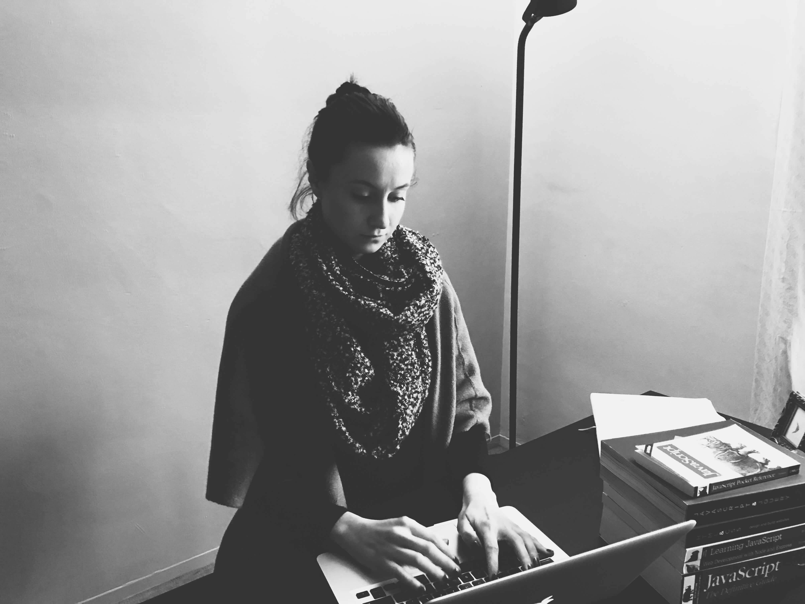

About Me

I'm a web developer and a writer. I decided to become a web developer after working as a project manager and realizing just how little I knew about computers. During my spare time I read, run, and blog about work culture, society, and my experience becoming a web developer.
My proudest accomplishments include running two half marathons, writing two books, and completing a Bachelor thesis on mental illness in the Victorian era.
Connect With Me